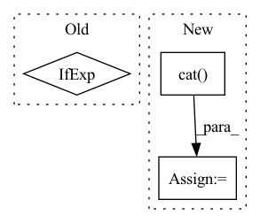

Pattern ID :786
Before Change
audio_emo_vecs = self.affineAudio(text_emo_vecs_origin)
audio_emo_vecs = audio_emo_vecs.unsqueeze(0).repeat(batch_size, 1, 1)
audio_attn_weights = self.attention(output_audio, audio_emo_vecs)
logits = audio_attn_weights if logits is None else logits + audio_attn_weights
if "v" in self.modalities:
output_visual, _ = self.RNNs[2](X_visual)After Change
// logits = visual_attn_weights if logits is None else logits + visual_attn_weights
scores.append(visual_attn_weights.unsqueeze(0))
scores = torch.cat( tuple(scores), dim=0) .transpose(0, 2)
logits = self.modality_weights(scores)
logits = logits.squeeze().t()
// for i in range(len(self.modalities)):
// if i == 0:In pattern: SUPERPATTERN
Frequency: 3
Non-data size: 3
Instances Fragment ID: 2864123
Project Name: wenliangdai/modality-transferable-mer
Commit Name: eaf8a7cf6ec5b7ed6389b9d73cd6bb31fc1576c2
Time: 2020-06-10
Author: wenliang.dai.1995@gmail.com
File Name: src/models/temp.py
M Class Name: EmotionEmbAttnModel
N Class Name: EmotionEmbAttnModel
M Method Name: forward(4)
N Method Name: forward(4)
M Parent Class: nn.Module
N Parent Class: nn.Module
M File Name: src/models/temp.py
N File Name: src/models/temp.py
M Start Line: 71
M End Line: 94
N Start Line: 74
N End Line: 105
Before Change
cond_prob_drop = 0.
):
batch_size, device = image_embed.shape[0], image_embed.device
t = self.time_mlp(time) if exists(self.time_mlp) else None
cond_prob_mask = prob_mask_like(batch_size, cond_prob_drop, device = device)
After Change
rearrange(self.null_image_embed, "d -> 1 d")
)
cond = torch.cat( (t, image_embed), dim = -1)
hiddens = []
for convnext, convnext2, downsample in self.downs: Fragment ID: 2864138
Project Name: lucidrains/dalle2-pytorch
Commit Name: 25d980ebbf1e22ce8396cdec400e22e83f754176
Time: 2022-04-12
Author: lucidrains@gmail.com
File Name: dalle2_pytorch/dalle2_pytorch.py
M Class Name: Unet
N Class Name: Unet
M Method Name: forward(2)
N Method Name: forward(2)
M Parent Class: nn.Module
N Parent Class: nn.Module
M File Name: dalle2_pytorch/dalle2_pytorch.py
N File Name: dalle2_pytorch/dalle2_pytorch.py
M Start Line: 411
M End Line: 414
N Start Line: 412
N End Line: 425
Before Change
if self.training and self.layer_dropout > 0:
to_drop = torch.empty(len(self.blocks)).uniform_(0, 1) < self.layer_dropout
blocks = [block for block, drop in zip(self.blocks, to_drop) if not drop]
blocks = self.blocks[:1] if len(blocks) == 0 else blocks
block_args = list(map(lambda x: {"f_args": x[0], "g_args": x[1]}, block_args))
return _ReversibleFunction.apply(x, blocks, block_args)After Change
self.blocks = nn.ModuleList([ReversibleBlock(f=f, g=g) for f, g in blocks])
def forward(self, x, **kwargs):
x = torch.cat( [x, x], dim=-1)
blocks = self.blocks
args = route_args(self.args_route, kwargs, len(blocks))
args = list(map(lambda x: {"f_args": x[0], "g_args": x[1]}, args))
layers_and_args = list(zip(blocks, args))
if self.training and self.layer_dropout > 0:
layers_and_args = layer_drop(layers_and_args, self.layer_dropout)
blocks, args = map(lambda ind: list(map(itemgetter(ind), layers_and_args)), (0, 1))
out = _ReversibleFunction.apply(x, blocks, args)
return torch.stack(out.chunk(2, dim=-1)).sum(dim=0)
Fragment ID: 2864130
Project Name: lucidrains/sinkhorn-transformer
Commit Name: d5b9c649e59290b15c15f85d0bb182cb20b699fb
Time: 2020-04-15
Author: lucidrains@gmail.com
File Name: sinkhorn_transformer/reversible.py
M Class Name: ReversibleSequence
N Class Name: ReversibleSequence
M Method Name: forward(2)
N Method Name: forward(2)
M Parent Class: nn.Module
N Parent Class: nn.Module
M File Name: sinkhorn_transformer/reversible.py
N File Name: sinkhorn_transformer/reversible.py
M Start Line: 133
M End Line: 142
N Start Line: 161
N End Line: 174